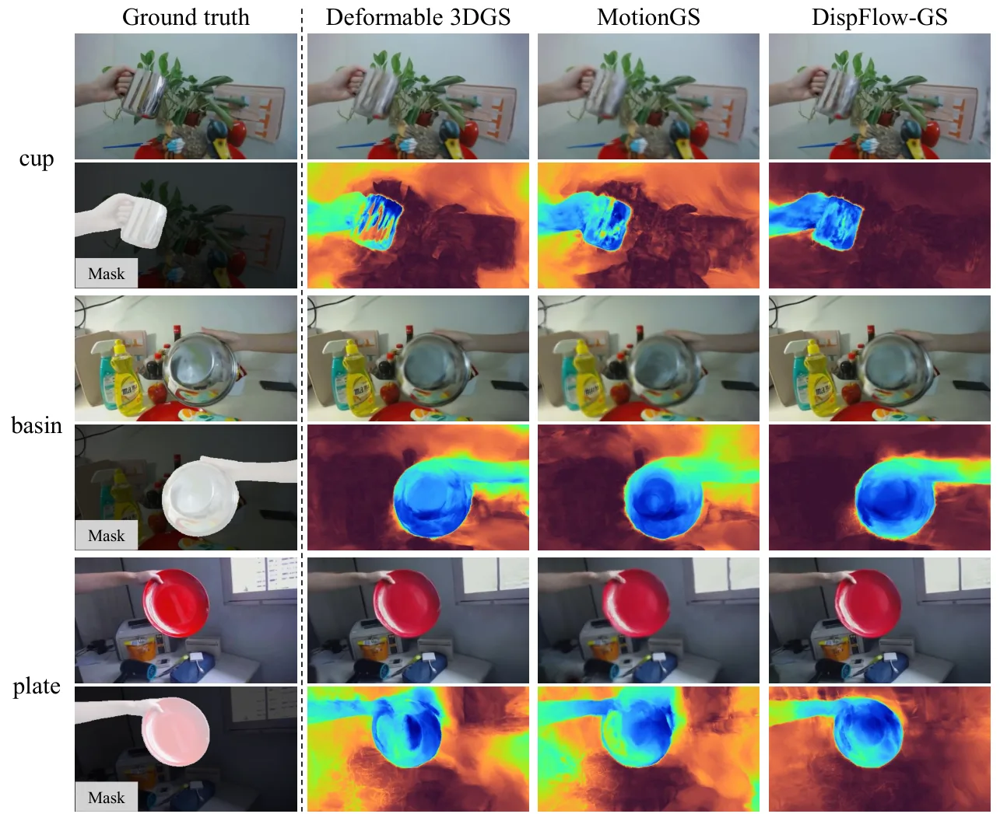
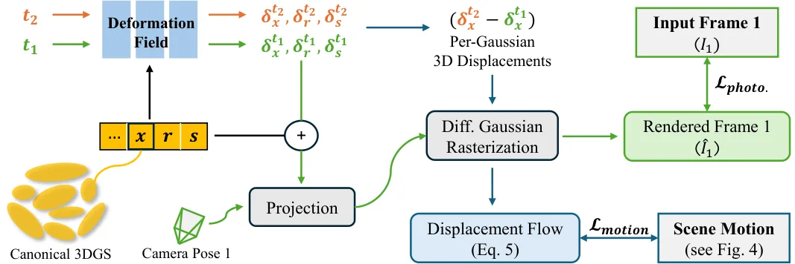
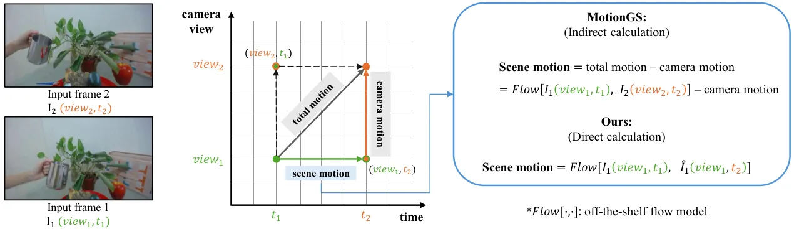
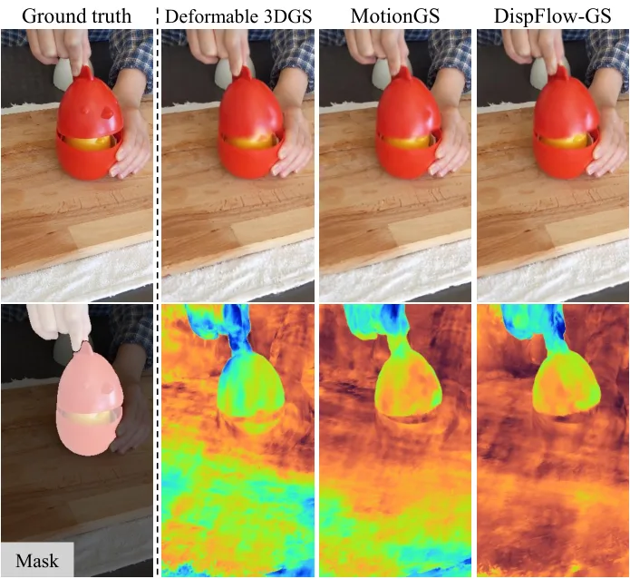
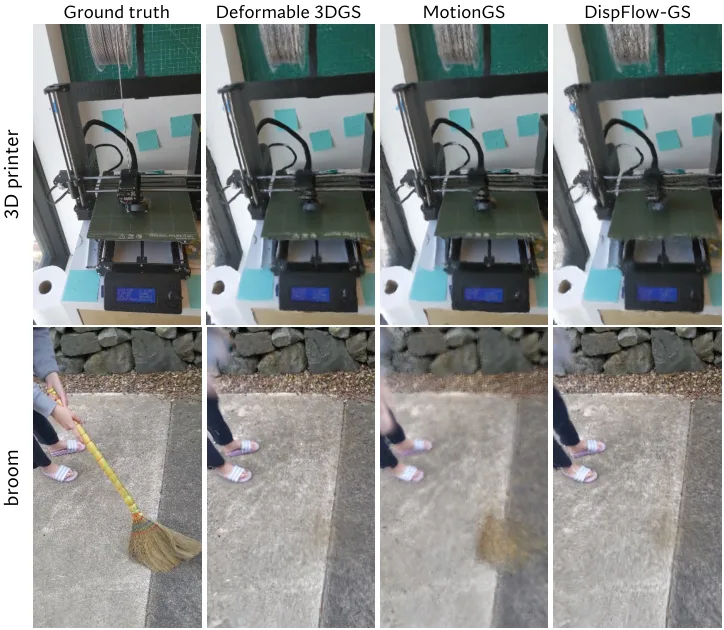

DispFlow-GS：用位移流监督与运动解耦的单目可形变 3D 高斯泼溅
DispFlow-GS: Displacement Flow Supervision with Motion Disentangling for Monocular Deformable 3D Gaussian Splatting
用「位移流」替代「高斯流」做可形变 3DGS 的运动监督，并用中间视图渲染解耦场景/相机运动；NeRF-DS 上 MMAP 提升约 39%、DRC 提升约 6%，而 PSNR 仅变约 0.1%，说明图像指标掩盖了运动建模的差异。
MMAP
DRC
PSNR
DRC-HN
作者、单位与技术谱系 · Research context
作者与单位
研究脉络
- Deformable 3DGS（Yang et al.）方法基座关系：直接在其形变场与光度优化上作扩展：位移流监督与训练调度都接在 Deformable-3DGS 之上。[论文第 V-C 节与参考[7]]
- Gaussian Flow 监督（MotionGS）上游方向关系：复现并批判高斯流监督范式：MotionGS 用交叉视角光流减去相机运动来估计场景运动，误差大。[论文第 III 节]
- 本篇推进：位移流 + 运动解耦本篇推进关系：把监督目标从高斯流改为逐高斯 3D 位移泼溅，并用中间视图渲染解耦运动。[论文第 IV 节与结论]
合作网络
- 南洋理工大学同单位署名Thai Duy Nguyen → Addison Lin Wang关系：共同署名[arXiv 首页署名]
- 对 GMFlow 光流骨干的技术依赖本方法运动监督 → GMFlow 光流模型关系：明确技术依赖[论文第 V 节实现细节]
作者与单位取自 arXiv 首页署名；脉络依据论文引用与自述（属有来源的解读）；未发现公开代码声明，故不登记代码节点，也不推断导师/师生关系。
方法本质拆解 · What actually changed
是不是微调？
不是新网络：它沿用可形变 3DGS 的形变场与光度优化，只新增一项运动监督损失。真正可学的是形变场参数，位移流本身是对逐高斯 3D 位移的泼溅结果、不含可学权重。所以本质是在既有动态 3DGS 网络上加了一条域一致的监督项。
有没有额外约束？
新增约束是运动损失 L_motion = ||F̂_scene − F̂_disp||_1，作用在形变场输出的逐高斯位移上；两条流先 min-max 归一化成 [0,1] 运动幅值再比较，避免强制像素级对应。运动项权重 α_t 在前 3000 步为 0、第 10000 步线性升到 0.1，起正则/稳定作用。
推理/后端到底做了什么？
推理仍是标准可形变 3DGS 渲染，不需要光流或额外后端。训练期的额外计算是：用预训练光流模型在新渲染的中间帧上估计场景运动流与相机流作为伪真值先验，然后做位移流的 L1 监督。它不是全局 BA、也不改动 3DGS 的泼溅过程。
方法本质是什么？
本质是把「运动监督」从「匹配像素对应」改写成「对齐运动幅值」：位移流用 3D 中心位移给出直接梯度路径，中间视图渲染再把相机运动从监督里剥离，于是形变场被约束到真正的动态区域。它没有做的是精确轨迹恢复，也没有改变图像指标，这恰是论文想证明的『运动与外观可分离』。
输入为动态多视图图像对与预训练光流先验；改变的位置是把高斯流监督换成逐高斯 3D 位移泼溅的位移流并解耦相机运动；合并动作是按运动幅值加 L1 运动损失、随训练调度升权；直接效果是运动定位 MMAP 大幅提升而图像指标几乎不变。

动机与问题Motivation
动机与问题
高斯流在一个像素处用 t1 时刻的 α 混合权重聚合各高斯的位移，隐含假设「同一像素的贡献高斯跨时间一致」，但形变与重投影会让贡献高斯与权重改变，因此高斯流并不建立 t1→t2 的像素对应。光流建立的是直接的像素映射，于是两者之间存在域差，语义无法被忠实继承。论文的动机问题是：能否把「高斯形变」重新解释成运动幅值图而非对应场，从而绕开「先解光流才能监督」的循环。
方法Method
方法总览
整体仍是可形变 3DGS 的优化框架：每步取一对不同视角/时刻的图像 (view1,t1) 与 (view2,t2)，对同一组高斯做两次形变，得到 t1 与 t2 的位移量。位移流 F_disp 由各高斯 3D 位移 δx_i^{t1t2}=δx_i(t2)−δx_i(t1) 经 α 混合泼溅构成；监督目标是场景运动 F_scene，由中间视图渲染间接获得。运动损失用 L1 形式，并与光度损失按随时间上升的权重 α_t 相加，前 3000 步 warm-up、第 10000 步才引入运动监督。
关键技术细节
位移流相对高斯流的关键差别在于它是「从 3D 中心位移直接构造」，因此对形变场有直接的梯度路径，而高斯流经不可微的对应假设。运动解耦用分解 (view1,t1)→(view1,t2)→(view2,t2)：先在固定视角下渲染中间帧隔离场景运动，再估计相机运动；作者采用前者，使场景运动表达在受光度约束的 view1 下更稳定。两段流都用现成光流模型（默认 GMFlow）估计并作伪真值先验，最后把两条流 min-max 归一化到 [0,1] 的运动幅值再比较，避免强制像素级精确对应。

实验Experiments
实验设置
数据集为两个真实动态场景基准：NeRF-DS（7 个场景：sieve、plate、bell、press、cup、as、basin）与 HyperNeRF（主表报告 chicken、banana）。指标包括图像指标 PSNR、SSIM、LPIPS，以及论文新提的 DRC（形变-渲染一致性）与沿用标准 AP 协议的 MMAP（运动掩码平均精度）。训练 20000 迭代、前 3000 步 warm-up、单张 RTX 5090，形变场空间学习率尺度 12，流模型为预训练 GMFlow，其余超参沿用 Deformable-3DGS。
实验数字与比较
NeRF-DS 上（论文表 II）：DispFlow-GS 平均 MMAP 0.9015、DRC 0.7081，对比 Deformable-3DGS 0.6497/0.6660、MotionGS 0.6825/0.6685；作者给出的相对提升是 MMAP 约 +39%、DRC 约 +6%。图像指标上（论文表 I）平均 PSNR/SSIM/LPIPS 为 23.80/0.8485/0.1869，与 Deformable-3DGS 的 23.76/0.8485/0.1846 几乎相同，作者称 PSNR 变化约 0.1%。HyperNeRF 上（论文表 III）平均 MMAP 0.719、DRC 0.750、PSNR 24.31，作者称 MMAP 比 MotionGS 高约 4.5%、比 Deformable-3DGS 高约 12.5%。
消融/失败边界
关键组件消融（论文表 IV）：基座 MMAP 0.6497；仅加位移流 DF 反降到 0.6306；DF+训练调度 TS 为 0.6817；DF+运动分解 MD 跳到 0.9316；三者齐备 0.9015——说明运动分解 MD 是使位移流可学的关键，加 MD 后 MMAP 提升约 47.7%、DRC 约 12.5%。监督目标消融（表 V）：把「间接场景运动」换成「直接场景运动」时，位移流 MMAP 再升约 24.2%，而高斯流反而下降；把运动分解顺序反过来，MMAP 掉到 0.5566（约 −38%）。失败边界：HyperNeRF 的 3D printer、broom 场景因相机位姿不准而重建失败，作者承认位移流依赖中间帧渲染、对位姿误差尤其敏感。
局限与迁移Limitations & Transfer
局限与待核验
作者明确承认：框架对光流与相机位姿误差敏感，且「监督运动幅值而非精确像素对应」在复杂动态场景里可能限制轨迹恢复精度。我们的待核验项：论文只在 NeRF-DS、HyperNeRF 两个小规模数据集上验证，未报告在带真实位姿误差的大规模动态数据（如自采 SLAM 序列）上的表现；DRC 与 MMAP 都是相对渲染/位姿的新指标，跨数据集可比性尚待独立复现确认。
与你研究路线的关系
可迁移模块是「把几何量与相机运动解耦后再做监督」的思路：在我们的 GNSS/INS/视觉融合里，可把「观测残差」按来源（场景动态 vs 自运动）分解后分别建模，避免把动态物体误差误记为里程计漂移。第二个可迁移点是「不要只用图像/外观指标验收」——DRC 与 MMAP 提醒我们同时报告任务相关指标与外观指标。下一步最小实验：在我们已有的动态序列上，构造「直接监督 vs 解耦监督」的最小 A/B，检查位姿 ATE 与动态区域残差是否同时改善。







